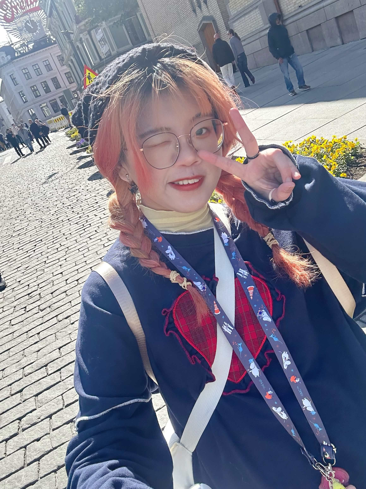

Yuan Ze University · Information Communication
Bachelor’s student · 2/60 in class, 4/112 in department
National Taipei University of Business · Public Finance and Tax Administration
Associate degree · 15/47 in department
I bring together two different educational backgrounds: taxation and business, and information communication. I moved from rule-based numbers and processes into visual design, UI/UX, interactive storytelling, and cross-media practice.
I rarely accept that something must stay the way it has always been. I observe how an audience understands, operates, and participates, then ask whether familiar rules can be rearranged. For me, design organizes an issue so it can be seen, understood, and remembered.

Bachelor’s student · 2/60 in class, 4/112 in department
Associate degree · 15/47 in department
Animation and video production for a Ministry of Education project
Accounting and administration
Taxpayer services